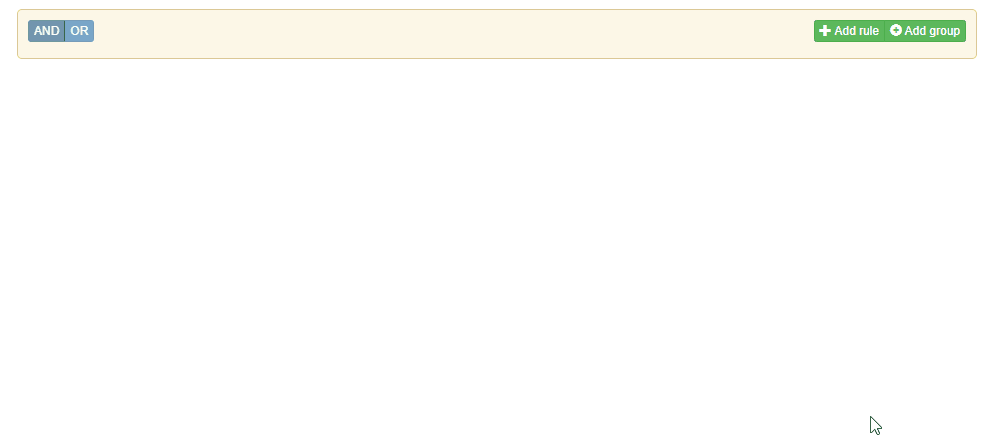
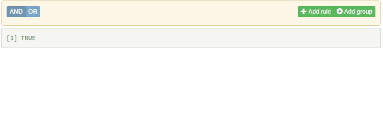
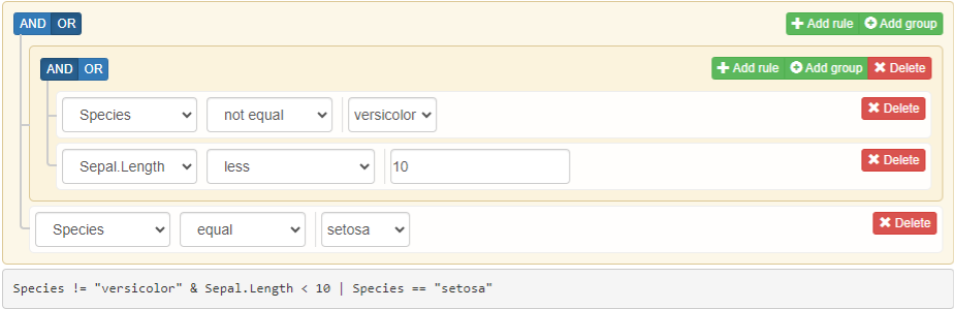

Overview
shinyQueryBuilder provides an input widget that allows
to construct complex filtering queries in Shiny. It’s a wrapper for JS
library jQuery-QueryBuilder.

Note: The component assumes usage of Bootstrap >=
5.0. For this goal we recommend to use it with built
dashboards.
Usage
Filters
Filters are responsible for defining available options for providing field-rules in the interface. With filters you may decide what operators should be available for the field, what possible operator-values can be chosen or even customize what kind of input controllers should be used for that goal.
Filter configuration is performed with queryFilter()
function:
filters <- list(
queryFilter(
id = "Species", # filter id
field = "Species", # variable name
label = "Species", # filter label
type = "character", # type/class of variable
input = "select", # input widget type
values = c("versicolor", "virginica", "setosa"), # possible filter values
operators = c("equal", "not_equal") # attached filter operators
),
queryFilter(
id = "Sepal.Length",
field = "Sepal.Length",
label = "Sepal.Length",
type = "numeric",
input = "number",
operators = c("less", "less_or_equal", "greater", "greater_or_equal")
)
)In order to render the widget, pass the defined filters to
queryBuilderInput() and place the output to the Shiny’s UI
object:
library(shiny)
library(bslib)
library(shinyQueryBuilder)
ui <- page_fluid(
queryBuilderInput(
"qb",
filters = filters
),
shiny::verbatimTextOutput("expr")
)
server <- function(input, output, session) {
output$expr <- renderPrint({
print(queryBuilder::queryToExpr(input$qb))
})
}
shinyApp(ui, server, options = list(launch.browser = TRUE))
The returned input object is a nested list that defines
the provided query. It can be easily converted to valid R filtering
query using queryBuilder
(queryBuilder::queryToExpr) - non-shiny package supporting
construction of complex filtering queries.
If you want to apply the filtering expression to your data, provide
it to dplyr::filter with !! operator,
e.g.:
renderTable({
dplyr::filter(iris, !!queryBuilder::queryToExpr(input$qb))
})Initialize queryBuilderInput state with
queryRule(s)
As shown above, the returned widgets value is interpreted by queryBuilder package. The package itself allows to construct filtering query with the usage of rules and groups - definitions for single field filtering operation and the way for combining them into a single filtering query.
The following state:

is configured by queryBuilder with:
library(queryBuilder)
query_def <- queryGroup(
condition = "OR",
queryGroup(
condition = "AND",
queryRule("Species", "not_equal", "versicolor"),
queryRule("Sepal.Length", "less", 10)
),
queryRule("Species", "equal", "setosa")
)
queryToExpr(query_def)
#> Species != "versicolor" & Sepal.Length < 10 | Species == "setosa"In order to initialize queryBuilderInput with the above
state, simply pass such query to rules argument:
library(shiny)
library(bslib)
library(shinyQueryBuilder)
ui <- page_fluid(
queryBuilderInput(
"qb",
filters = filters,
rules = query_def
),
shiny::verbatimTextOutput("expr")
)
server <- function(input, output, session) {
output$expr <- renderPrint({
print(queryBuilder::queryToExpr(input$qb))
})
}
shinyApp(ui, server, options = list(launch.browser = TRUE))The initiated state can be then customized by user when needed.
See more examples at examples.
Installation
# CRAN version
install.packages("shinyQueryBuilder")
# Latest development version
remotes::install_github("https://github.com/r-world-devs/shinyQueryBuilder")Acknowledgement
Special thanks to Kamil Wais, Adam Foryś, Maciej Banaś,Karolina Marcinkowska and Kamil Koziej for the support in the package development and thorough testing of its functionality.
Getting help
In a case you found any bugs, have feature request or general question please file an issue at the package Github. You may also contact the package author directly via email at krystian8207@gmail.com.